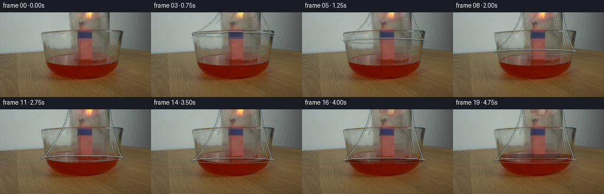
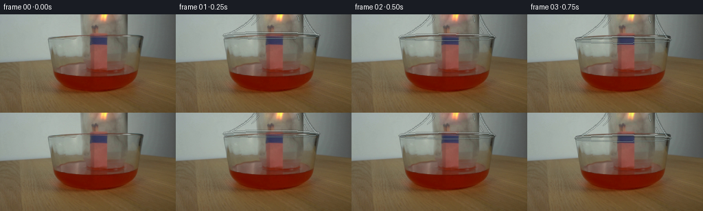

CODING AGENTS AS PIXEL WORLD MODELS
traex/GPT-5.6-Sol · 0163
点击播放 · 原生 RGB 像素
逐轮保存的候选
回放视频、检查图与代码变化。
每份候选均可单独播放。实际图片检查记录在下方工具轨迹中。
候选 01播放与检查图
点击播放 · 原生 RGB 像素


展开代码变化
--- 上一保存版本
+++ 本次保存版本
@@ -0,0 +1,192 @@
+from pathlib import Path
+import math
+import cv2
+import numpy as np
+from PIL import Image
+import artifact_io
+
+ROOT = Path(__file__).resolve().parent
+SRC = np.asarray(Image.open(ROOT / "first_frame.png").convert("RGB"), dtype=np.uint8)
+H, W = SRC.shape[:2]
+
+
+def smoothstep(x):
+ x = max(0.0, min(1.0, x))
+ return x*x*(3.0-2.0*x)
+
+
+def alpha_over(img, color, alpha):
+ """Composite a constant RGB color with a scalar or HxW alpha."""
+ a = np.asarray(alpha, np.float32)
+ if a.ndim == 2:
+ a = a[..., None]
+ return np.clip(img.astype(np.float32)*(1-a) + np.asarray(color, np.float32)*a, 0, 255).astype(np.uint8)
+
+
+def bell_edges(y, lip_y):
+ # The inverted jar has a narrower shoulder above the frame and flares
+ # gently toward its open lip.
+ u = np.clip((np.asarray(y, np.float32)+6.0)/(lip_y+6.0), 0, 1)
+ left = 116.0 - 45.0*(u**1.72)
+ right = 186.0 + 21.0*(u**1.62)
+ return left, right
+
+
+def draw_aa_polyline(layer, pts, color, width=1):
+ pts = np.rint(np.asarray(pts)).astype(np.int32).reshape((-1, 1, 2))
+ cv2.polylines(layer, [pts], False, color, width, cv2.LINE_AA)
+
+
+def render_frame(k):
+ if k == 0:
+ return SRC.copy()
+
+ # During the first 3.35 seconds the jar is steadily lowered. It then
+ # settles into the liquid without any camera motion.
+ descend = smoothstep(k / 13.2)
+ lip_y = 30.0 + 57.0*descend
+ img = SRC.copy()
+
+ # Sub-pixel glass refraction. This is deliberately weak: most of a real
+ # clear jar is seen through rather than as a painted transparent object.
+ yy, xx = np.mgrid[0:H, 0:W].astype(np.float32)
+ le, ri = bell_edges(yy, lip_y)
+ inside = (yy <= lip_y+3) & (xx >= le) & (xx <= ri)
+ edge_d = np.minimum(xx-le, ri-xx)
+ dx = (0.40*np.sin(yy*0.145 + k*0.09) * np.exp(-np.maximum(edge_d,0)/16.0))
+ # Curved glass also compresses the image minutely at its flared edges.
+ dx += np.where(xx < (le+ri)/2, 0.34, -0.34) * np.exp(-np.maximum(edge_d,0)/3.8)
+ mapx = xx + np.where(inside, dx, 0).astype(np.float32)
+ mapy = yy + np.where(inside, 0.12*np.sin(xx*.09), 0).astype(np.float32)
+ refr = cv2.remap(img, mapx, mapy, cv2.INTER_LINEAR, borderMode=cv2.BORDER_REFLECT)
+ a = (inside.astype(np.float32) * (0.020 + 0.010*np.cos((xx-139)*.035)**2))[...,None]
+ img = np.clip(img.astype(np.float32)*(1-a) + refr.astype(np.float32)*a, 0,255).astype(np.uint8)
+
+ # Very slight cool reflection in the body, strongest near the two walls.
+ edge_glow = inside * (np.exp(-np.maximum(edge_d,0)/4.4)*0.048 + 0.007)
+ # reflections are weaker in the dark tabletop than against the pale wall
+ edge_glow *= np.where(yy < 67, 1.0, 0.63)
+ img = alpha_over(img, (191, 207, 207), edge_glow)
+
+ # Flame: low-amplitude real-time flicker before the jar seals at the bowl.
+ # The actual flame pixels in the source are retained, so it looks like the
+ # same flame rather than a newly drawn symbol.
+ roi = img[0:30, 124:169].astype(np.float32)
+ srcroi = SRC[0:30, 124:169].astype(np.float32)
+ warm = ((srcroi[...,0] > srcroi[...,2]+18) &
+ (srcroi[...,0] > 125) & (np.indices(srcroi.shape[:2])[0] < 18))
+ flick = 1.0 + 0.035*math.sin(1.77*k) + 0.018*math.sin(3.41*k+0.7)
+ if k < 14:
+ roi[warm,0] = np.clip(roi[warm,0]*flick, 0,255)
+ roi[warm,1] = np.clip(roi[warm,1]*(1+.055*math.sin(2.2*k)),0,255)
+ img[0:30,124:169] = roi.astype(np.uint8)
+
+ # Once the open rim reaches the liquid, oxygen is cut off. The yellow
+ # flame contracts, turns orange and dies over about one second.
+ extinguish = smoothstep((k-13.0)/4.3)
+ if extinguish > 0:
+ r = img[0:22,124:169].astype(np.float32)
+ s = SRC[0:22,124:169].astype(np.float32)
+ Y, X = np.mgrid[0:22,0:45]
+ core = ((s[...,0] > 155) & (s[...,1] > 105) & (s[...,0] > s[...,2]+35))
+ # contraction from the top and sides, as a match flame behaves
+ cx = 28.0
+ survive = ((X-cx)**2/(8.0*(1-extinguish)+1.4)**2 +
+ (Y-13.0)**2/(16.0*(1-extinguish)+2.5)**2) < 1
+ dying = core & ~survive
+ gray = .40*r[...,0] + .43*r[...,1] + .17*r[...,2]
+ target = np.stack((gray*.66+38, gray*.55+30, gray*.47+27), axis=-1)
+ aa = extinguish * dying[...,None]
+ r = r*(1-aa) + target*aa
+ # surviving core changes from yellow to low orange
+ if extinguish > .12:
+ q = core & survive
+ r[q,1] *= (1-.38*extinguish)
+ r[q,2] *= (1-.22*extinguish)
+ img[0:22,124:169] = np.clip(r,0,255).astype(np.uint8)
+
+ # Draw optical edges separately, using anti-aliased broken highlights.
+ glass = np.zeros_like(img)
+ ys = np.linspace(-4, lip_y, 110)
+ ls, rs = bell_edges(ys, lip_y)
+ left_pts = np.c_[ls, ys]
+ right_pts = np.c_[rs, ys]
+ # dark outer refraction and a pale inner return line
+ draw_aa_polyline(glass, left_pts, (62,72,69), 1)
+ draw_aa_polyline(glass, right_pts, (57,67,65), 1)
+ draw_aa_polyline(glass, np.c_[ls+1.45,ys], (196,207,204), 1)
+ draw_aa_polyline(glass, np.c_[rs-1.25,ys], (181,195,193), 1)
+
+ # Vertical specular streaks are intentionally discontinuous and faint.
+ for frac, y0f, y1f, col in [(.12,.13,.48,(205,217,213)),
+ (.86,.06,.32,(186,202,200)),
+ (.91,.56,.81,(197,208,203))]:
+ y0,y1=lip_y*y0f, lip_y*y1f
+ sy=np.linspace(y0,y1,max(2,int(y1-y0)+1))
+ sl,sr=bell_edges(sy,lip_y)
+ sx=sl+(sr-sl)*frac
+ draw_aa_polyline(glass,np.c_[sx,sy],col,1)
+
+ # Open mouth: a flattened ellipse with pale back edge, dark refracted
+ # underside, and a brighter front lip. It is the strongest cue of motion.
+ l0, r0 = bell_edges(lip_y, lip_y)
+ cx0=(l0+r0)/2; ax=(r0-l0)/2+1.5; ay=4.1
+ angles=np.linspace(math.pi,2*math.pi,120) # front/lower half
+ front=np.c_[cx0+ax*np.cos(angles), lip_y+ay*np.sin(angles)]
+ angles2=np.linspace(0,math.pi,120) # back/upper half
+ back=np.c_[cx0+ax*np.cos(angles2), lip_y+ay*np.sin(angles2)]
+ draw_aa_polyline(glass,back,(149,165,162),1)
+ draw_aa_polyline(glass,front,(47,55,52),2)
+ draw_aa_polyline(glass,front+np.array([0,-1.0]),(202,211,207),1)
+
+ # Composite glass line art with varied opacity; black pixels mean empty.
+ gm = np.max(glass,axis=2)>0
+ ga = np.where(gm, .58, 0.0)
+ # retain anti-aliasing already encoded by OpenCV through its dim edge pixels
+ lum=np.max(glass,axis=2).astype(np.float32)
+ ga *= np.clip(lum/110.0, .30, 1.0)
+ img = np.clip(img.astype(np.float32)*(1-ga[...,None]) + glass.astype(np.float32)*ga[...,None],0,255).astype(np.uint8)
+
+ # At full lowering the red liquid is enclosed. A narrow meniscus climbs
+ # inside the jar after the flames begin consuming the trapped oxygen.
+ rise = smoothstep((k-15.0)/4.0)
+ if rise > 0:
+ water_y = 89.0 - 10.0*rise
+ Y,X=np.mgrid[0:H,0:W]
+ ll,rr=bell_edges(Y,lip_y)
+ liquid=(Y>=water_y)&(Y<=min(lip_y+3,96))&(X>ll+3)&(X<rr-3)
+ # transparent red liquid; preserve all source texture
+ al=liquid.astype(np.float32)*(0.10+0.06*rise)
+ img=alpha_over(img,(111,18,6),al)
+ # elliptical meniscus and a soft reflected highlight
+ over=np.zeros_like(img)
+ ly=int(round(water_y)); lx,rx=bell_edges(water_y,lip_y)
+ cc=(lx+rx)/2; aa=(rx-lx)/2-3
+ ang=np.linspace(0,2*math.pi,180)
+ men=np.c_[cc+aa*np.cos(ang), water_y+2.15*np.sin(ang)]
+ draw_aa_polyline(over,men,(126,44,30),1)
+ mm=np.max(over,2)>0
+ img[mm]=(img[mm].astype(np.float32)*.55+over[mm].astype(np.float32)*.45).astype(np.uint8)
+
+ # A delicate gray smoke thread after extinction, visible through glass.
+ if k >= 15:
+ smoke=np.zeros_like(img)
+ strength=smoothstep((k-14)/3.0)*(1-smoothstep((k-18)/2.0)*.55)
+ phase=.45*k
+ sy=np.linspace(1,25,70)
+ sx=151 + 1.35*np.sin(sy*.28+phase) + .030*(25-sy)**1.25
+ draw_aa_polyline(smoke,np.c_[sx,sy],(111,113,106),1)
+ sm=np.max(smoke,2)>0
+ sa=0.18*strength*np.clip(np.max(smoke,2)/120,0,1)
+ img=np.clip(img.astype(float)*(1-sa[...,None])+smoke.astype(float)*sa[...,None],0,255).astype(np.uint8)
+
+ return img
+
+
+def main():
+ frames=np.stack([render_frame(i) for i in range(20)]).astype(np.uint8)
+ assert np.array_equal(frames[0],SRC)
+ artifact_io.save(frames,ROOT)
+
+if __name__ == '__main__':
+ main()
候选 02播放与检查图
点击播放 · 原生 RGB 像素

展开代码变化
--- 上一保存版本
+++ 本次保存版本
@@ -131,9 +131,9 @@
# underside, and a brighter front lip. It is the strongest cue of motion.
l0, r0 = bell_edges(lip_y, lip_y)
cx0=(l0+r0)/2; ax=(r0-l0)/2+1.5; ay=4.1
- angles=np.linspace(math.pi,2*math.pi,120) # front/lower half
+ angles=np.linspace(0,math.pi,120) # front/lower half
front=np.c_[cx0+ax*np.cos(angles), lip_y+ay*np.sin(angles)]
- angles2=np.linspace(0,math.pi,120) # back/upper half
+ angles2=np.linspace(math.pi,2*math.pi,120) # back/upper half
back=np.c_[cx0+ax*np.cos(angles2), lip_y+ay*np.sin(angles2)]
draw_aa_polyline(glass,back,(149,165,162),1)
draw_aa_polyline(glass,front,(47,55,52),2)
候选 03播放与检查图
可观测工具轨迹
实际执行的命令与返回图片。
命令 1exit 0
/bin/bash -lc "cat GENERATION_RULES.md && printf '\\n---PROMPT---\\n' && cat prompt.txt"
命令 2exit 0
/bin/bash -lc "find . -maxdepth 2 -type f -printf '%p\\n' | sort && python3 - <<'PY'
from PIL import Image
im=Image.open('first_frame.png')
print(im.mode,im.size)
PY"命令 3exit 0
/bin/bash -lc "python3 - <<'PY'
from PIL import Image
import numpy as np
im=np.array(Image.open('first_frame.png'))
# grid samples every 8 px as hex, rows every 8
for y in range(0,144,8):
print(f'{y:03}:',' '.join('%02x%02x%02x'%tuple(im[y,x]) for x in range(0,256,8)))
PY"命令 4exit 0
/bin/bash -lc "python3 - <<'PY'
from PIL import Image
import numpy as np
im=np.array(Image.open('first_frame.png'))
# each 4x4 avg assign chars by hsv-ish
for y in range(0,144,4):
s=''
for x in range(0,256,4):
r,g,b=im[y:y+4,x:x+4].mean((0,1)); mx=max(r,g,b); mn=min(r,g,b)
if mx>210 and r>180 and g>150 and b<120:c='Y'
elif r>150 and r>g*1.25 and g>b*1.1:c='O'
elif r>100 and r>g*1.45:c='R'
elif b>r*1.12 and b>g*1.02:c='B'
elif mx-mn<12 and mx<90:c='#'
elif mx-mn<15 and mx<140:c='g'
elif mx-mn<18 and mx>=140:c='.'
elif r>g*1.25 and g<95:c='r'
elif r>g*1.12 and g>b*1.1:c='b' # brown
elif g>=r*.95 and g>b*1.05:c='s'
elif mx<75:c='@'
elif mx<110:c='d'
elif mx<150:c='m'
else:c='-'
s+=c
print(f'{y:03} {s}')
PY"命令 5exit 0
/bin/bash -lc "python3 - <<'PY'
from PIL import Image
import numpy as np
from scipy.ndimage import sobel
im=np.array(Image.open('first_frame.png')).astype(float)
g=.299*im[:,:,0]+.587*im[:,:,1]+.114*im[:,:,2]
e=np.hypot(sobel(g,0),sobel(g,1))
# 2x2 max output chars
for y in range(0,144,2):
s=''
for x in range(0,256,2):
q=e[y:y+2,x:x+2].mean()
s += ' ' if q<20 else '.' if q<45 else ':' if q<80 else '*' if q<140 else 'O' if q<220 else '#'
print(s.rstrip())
PY"命令 6exit 0
/bin/bash -lc "python3 - <<'PY'
from PIL import Image
import numpy as np
im=np.array(Image.open('first_frame.png'))
# average RGB and std of 8x8 blocks; rows 0-72 x 80-224
for y in range(0,72,4):
print('Y',y)
for x in range(72,224,4):
q=im[y:y+4,x:x+4]; c=q.mean((0,1));
# compact classify by dominant + lum
r,g,b=c; lum=c.mean()
if r>190 and g>130 and b<100:z='F'
elif r>g+25:z='R'
elif b>r+12:z='U'
elif max(c)-min(c)<12:z=str(min(9,int(lum//20)))
elif r>g+10:z='b'
elif g>b+10:z='G'
else:z='.'
print(z,end='')
print()
PY"命令 7exit 0
/bin/bash -lc "python3 - <<'PY'
from PIL import Image
import numpy as np
from scipy.ndimage import sobel
im=np.array(Image.open('first_frame.png')).astype(float); g=im.mean(2); e=np.hypot(sobel(g,0),sobel(g,1))
for y in range(0,72):
s=''
for x in range(80,241,2):
q=e[y,x:x+2].max();s+=' ' if q<35 else '.' if q<80 else '*' if q<160 else '#'
print(f'{y:02}'+s.rstrip())
PY"命令 8exit 0
/bin/bash -lc "python3 - <<'PY'
from PIL import Image
import numpy as np
from scipy.ndimage import sobel
im=np.array(Image.open('first_frame.png')).astype(float); g=im.mean(2)
gx=np.abs(sobel(g,1)); gy=np.abs(sobel(g,0))
print('vertical x energy y0:70')
for x in np.argsort(gx[:70].sum(0))[-30:]: print(x,round(gx[:70,x].sum()))
print('horiz y energy x70:230')
for y in np.argsort(gy[:,70:230].sum(1))[-30:]: print(y,round(gy[y,70:230].sum()))
# row runs every 4 listing discontinuities edge >30
for y in range(0,100,4):
d=np.linalg.norm(np.diff(im[y],axis=0),axis=1)
xs=np.where(d>30)[0]
# consolidate
runs=[]
for x in xs:
if not runs or x>runs[-1][-1]+1:runs.append([x])
else:runs[-1].append(x)
print(y, [(r[0],r[-1],round(d[r].max())) for r in runs])
PY"命令 9exit 0
/bin/bash -lc "python3 - <<'PY'
from PIL import Image
import numpy as np
im=np.array(Image.open('first_frame.png'))
for y in [0,8,16,24,28,29,30,31,32,33,34,36,40,44,48,52,56,60,64,68,72,80,88,96,104,112,120]:
print('\\nY',y)
for x in range(0,256,4):
c=im[y,x]; print(f'{x:03}:{c[0]:02x}{c[1]:02x}{c[2]:02x}',end=' ')
print()
PY"命令 10exit 0
/bin/bash -lc 'cat artifact_io.py'
命令 11exit 0
/bin/bash -lc "python3 - <<'PY' try: import cv2; print(cv2.__version__) except Exception as e: print(e) PY"
命令 12exit 0
/bin/bash -lc "python3 - <<'PY'
import numpy as np
from PIL import Image
im=np.array(Image.open('first_frame.png'))
# top bright sum and color diff
v=im.sum(2)
for i in np.argsort(v.ravel())[-50:][::-1][:30]:
y,x=np.unravel_index(i,v.shape); print(x,y,im[y,x],v[y,x])
print('warm yellow')
s=(im[:,:,0].astype(int)+im[:,:,1]-im[:,:,2]*2)
for i in np.argsort(s.ravel())[-30:][::-1]:
y,x=np.unravel_index(i,s.shape);print(x,y,im[y,x],s[y,x])
PY"命令 13exit 0
/bin/bash -lc "cat > generate.py <<'PY'
from pathlib import Path
import math
import cv2
import numpy as np
from PIL import Image
import artifact_io
ROOT = Path(__file__).resolve().parent
SRC = np.asarray(Image.open(ROOT / \"first_frame.png\").convert(\"RGB\"), dtype=np.uint8)
H, W = SRC.shape[:2]
def smoothstep(x):
x = max(0.0, min(1.0, x))
return x*x*(3.0-2.0*x)
def alpha_over(img, color, alpha):
\"\"\"Composite a constant RGB color with a scalar or HxW alpha.\"\"\"
a = np.asarray(alpha, np.float32)
if a.ndim == 2:
a = a[..., None]
return np.clip(img.astype(np.float32)*(1-a) + np.asarray(color, np.float32)*a, 0, 255).astype(np.uint8)
def bell_edges(y, lip_y):
# The inverted jar has a narrower shoulder above the frame and flares
# gently toward its open lip.
u = np.clip((np.asarray(y, np.float32)+6.0)/(lip_y+6.0), 0, 1)
left = 116.0 - 45.0*(u**1.72)
right = 186.0 + 21.0*(u**1.62)
return left, right
def draw_aa_polyline(layer, pts, color, width=1):
pts = np.rint(np.asarray(pts)).astype(np.int32).reshape((-1, 1, 2))
cv2.polylines(layer, [pts], False, color, width, cv2.LINE_AA)
def render_frame(k):
if k == 0:
return SRC.copy()
# During the first 3.35 seconds the jar is steadily lowered. It then
# settles into the liquid without any camera motion.
descend = smoothstep(k / 13.2)
lip_y = 30.0 + 57.0*descend
img = SRC.copy()
# Sub-pixel glass refraction. This is deliberately weak: most of a real
# clear jar is seen through rather than as a painted transparent object.
yy, xx = np.mgrid[0:H, 0:W].astype(np.float32)
le, ri = bell_edges(yy, lip_y)
inside = (yy <= lip_y+3) & (xx >= le) & (xx <= ri)
edge_d = np.minimum(xx-le, ri-xx)
dx = (0.40*np.sin(yy*0.145 + k*0.09) * np.exp(-np.maximum(edge_d,0)/16.0))
# Curved glass also compresses the image minutely at its flared edges.
dx += np.where(xx < (le+ri)/2, 0.34, -0.34) * np.exp(-np.maximum(edge_d,0)/3.8)
mapx = xx + np.where(inside, dx, 0).astype(np.float32)
mapy = yy + np.where(inside, 0.12*np.sin(xx*.09), 0).astype(np.float32)
refr = cv2.remap(img, mapx, mapy, cv2.INTER_LINEAR, borderMode=cv2.BORDER_REFLECT)
a = (inside.astype(np.float32) * (0.020 + 0.010*np.cos((xx-139)*.035)**2))[...,None]
img = np.clip(img.astype(np.float32)*(1-a) + refr.astype(np.float32)*a, 0,255).astype(np.uint8)
# Very slight cool reflection in the body, strongest near the two walls.
edge_glow = inside * (np.exp(-np.maximum(edge_d,0)/4.4)*0.048 + 0.007)
# reflections are weaker in the dark tabletop than against the pale wall
edge_glow *= np.where(yy < 67, 1.0, 0.63)
img = alpha_over(img, (191, 207, 207), edge_glow)
# Flame: low-amplitude real-time flicker before the jar seals at the bowl.
# The actual flame pixels in the source are retained, so it looks like the
# same flame rather than a newly drawn symbol.
roi = img[0:30, 124:169].astype(np.float32)
srcroi = SRC[0:30, 124:169].astype(np.float32)
warm = ((srcroi[...,0] > srcroi[...,2]+18) &
(srcroi[...,0] > 125) & (np.indices(srcroi.shape[:2])[0] < 18))
flick = 1.0 + 0.035*math.sin(1.77*k) + 0.018*math.sin(3.41*k+0.7)
if k < 14:
roi[warm,0] = np.clip(roi[warm,0]*flick, 0,255)
roi[warm,1] = np.clip(roi[warm,1]*(1+.055*math.sin(2.2*k)),0,255)
img[0:30,124:169] = roi.astype(np.uint8)
# Once the open rim reaches the liquid, oxygen is cut off. The yellow
# flame contracts, turns orange and dies over about one second.
extinguish = smoothstep((k-13.0)/4.3)
if extinguish > 0:
r = img[0:22,124:169].astype(np.float32)
s = SRC[0:22,124:169].astype(np.float32)
Y, X = np.mgrid[0:22,0:45]
core = ((s[...,0] > 155) & (s[...,1] > 105) & (s[...,0] > s[...,2]+35))
# contraction from the top and sides, as a match flame behaves
cx = 28.0
survive = ((X-cx)**2/(8.0*(1-extinguish)+1.4)**2 +
(Y-13.0)**2/(16.0*(1-extinguish)+2.5)**2) < 1
dying = core & ~survive
gray = .40*r[...,0] + .43*r[...,1] + .17*r[...,2]
target = np.stack((gray*.66+38, gray*.55+30, gray*.47+27), axis=-1)
aa = extinguish * dying[...,None]
r = r*(1-aa) + target*aa
# surviving core changes from yellow to low orange
if extinguish > .12:
q = core & survive
r[q,1] *= (1-.38*extinguish)
r[q,2] *= (1-.22*extinguish)
img[0:22,124:169] = np.clip(r,0,255).astype(np.uint8)
# Draw optical edges separately, using anti-aliased broken highlights.
glass = np.zeros_like(img)
ys = np.linspace(-4, lip_y, 110)
ls, rs = bell_edges(ys, lip_y)
left_pts = np.c_[ls, ys]
right_pts = np.c_[rs, ys]
# dark outer refraction and a pale inner return line
draw_aa_polyline(glass, left_pts, (62,72,69), 1)
draw_aa_polyline(glass, right_pts, (57,67,65), 1)
draw_aa_polyline(glass, np.c_[ls+1.45,ys], (196,207,204), 1)
draw_aa_polyline(glass, np.c_[rs-1.25,ys], (181,195,193), 1)
# Vertical specular streaks are intentionally discontinuous and faint.
for frac, y0f, y1f, col in [(.12,.13,.48,(205,217,213)),
(.86,.06,.32,(186,202,200)),
(.91,.56,.81,(197,208,203))]:
y0,y1=lip_y*y0f, lip_y*y1f
sy=np.linspace(y0,y1,max(2,int(y1-y0)+1))
sl,sr=bell_edges(sy,lip_y)
sx=sl+(sr-sl)*frac
draw_aa_polyline(glass,np.c_[sx,sy],col,1)
# Open mouth: a flattened ellipse with pale back edge, dark refracted
# underside, and a brighter front lip. It is the strongest cue of motion.
l0, r0 = bell_edges(lip_y, lip_y)
cx0=(l0+r0)/2; ax=(r0-l0)/2+1.5; ay=4.1
angles=np.linspace(math.pi,2*math.pi,120) # front/lower half
front=np.c_[cx0+ax*np.cos(angles), lip_y+ay*np.sin(angles)]
angles2=np.linspace(0,math.pi,120) # back/upper half
back=np.c_[cx0+ax*np.cos(angles2), lip_y+ay*np.sin(angles2)]
draw_aa_polyline(glass,back,(149,165,162),1)
draw_aa_polyline(glass,front,(47,55,52),2)
draw_aa_polyline(glass,front+np.array([0,-1.0]),(202,211,207),1)
# Composite glass line art with varied opacity; black pixels mean empty.
gm = np.max(glass,axis=2)>0
ga = np.where(gm, .58, 0.0)
# retain anti-aliasing already encoded by OpenCV through its dim edge pixels
lum=np.max(glass,axis=2).astype(np.float32)
ga *= np.clip(lum/110.0, .30, 1.0)
img = np.clip(img.astype(np.float32)*(1-ga[...,None]) + glass.astype(np.float32)*ga[...,None],0,255).astype(np.uint8)
# At full lowering the red liquid is enclosed. A narrow meniscus climbs
# inside the jar after the flames begin consuming the trapped oxygen.
rise = smoothstep((k-15.0)/4.0)
if rise > 0:
water_y = 89.0 - 10.0*rise
Y,X=np.mgrid[0:H,0:W]
ll,rr=bell_edges(Y,lip_y)
liquid=(Y>=water_y)&(Y<=min(lip_y+3,96))&(X>ll+3)&(X<rr-3)
# transparent red liquid; preserve all source texture
al=liquid.astype(np.float32)*(0.10+0.06*rise)
img=alpha_over(img,(111,18,6),al)
# elliptical meniscus and a soft reflected highlight
over=np.zeros_like(img)
ly=int(round(water_y)); lx,rx=bell_edges(water_y,lip_y)
cc=(lx+rx)/2; aa=(rx-lx)/2-3
ang=np.linspace(0,2*math.pi,180)
men=np.c_[cc+aa*np.cos(ang), water_y+2.15*np.sin(ang)]
draw_aa_polyline(over,men,(126,44,30),1)
mm=np.max(over,2)>0
img[mm]=(img[mm].astype(np.float32)*.55+over[mm].astype(np.float32)*.45).astype(np.uint8)
# A delicate gray smoke thread after extinction, visible through glass.
if k >= 15:
smoke=np.zeros_like(img)
strength=smoothstep((k-14)/3.0)*(1-smoothstep((k-18)/2.0)*.55)
phase=.45*k
sy=np.linspace(1,25,70)
sx=151 + 1.35*np.sin(sy*.28+phase) + .030*(25-sy)**1.25
draw_aa_polyline(smoke,np.c_[sx,sy],(111,113,106),1)
sm=np.max(smoke,2)>0
sa=0.18*strength*np.clip(np.max(smoke,2)/120,0,1)
img=np.clip(img.astype(float)*(1-sa[...,None])+smoke.astype(float)*sa[...,None],0,255).astype(np.uint8)
return img
def main():
frames=np.stack([render_frame(i) for i in range(20)]).astype(np.uint8)
assert np.array_equal(frames[0],SRC)
artifact_io.save(frames,ROOT)
if __name__ == '__main__':
main()
PY
python3 generate.py
python3 - <<'PY'
from PIL import Image
import numpy as np
im=np.array(Image.open('first_frame.png')); z=np.load('pixels.npz')['pixels']
first=np.stack([(z[:,:,0]>>16)&255,(z[:,:,0]>>8)&255,z[:,:,0]&255],2).astype('uint8')
print('first exact',np.array_equal(im,first),'inspection',Image.open('inspection.png').size)
for i in range(1,20):
a=np.array(Image.open(f'frames/{i:02}.png')); b=np.array(Image.open(f'frames/{i-1:02}.png'))
print(i, int(np.abs(a.astype(int)-b).sum()), np.sum(np.any(a"'!=b,2)))
PY'命令 14exit 0
/bin/bash -lc "python3 - <<'PY'
p='generate.py'
s=open(p).read()
s=s.replace('angles=np.linspace(math.pi,2*math.pi,120) # front/lower half\\n front=np.c_[cx0+ax*np.cos(angles), lip_y+ay*np.sin(angles)]\\n angles2=np.linspace(0,math.pi,120) # back/upper half\\n back=np.c_[cx0+ax*np.cos(angles2), lip_y+ay*np.sin(angles2)]', 'angles=np.linspace(0,math.pi,120) # front/lower half\\n front=np.c_[cx0+ax*np.cos(angles), lip_y+ay*np.sin(angles)]\\n angles2=np.linspace(math.pi,2*math.pi,120) # back/upper half\\n back=np.c_[cx0+ax*np.cos(angles2), lip_y+ay*np.sin(angles2)]')
open(p,'w').write(s)
PY
python3 generate.py
python3 -m py_compile generate.py
python3 - <<'PY'
import numpy as np
from PIL import Image
f=np.stack([np.array(Image.open(f'frames/{i:02}.png')) for i in range(20)])
print(f.shape,f.dtype, 'exact first:',np.array_equal(f[0],np.array(Image.open('first_frame.png'))))
print('range',f.min(),f.max(),'unique frames',len({x.tobytes() for x in f}))
PY"保存候选 3 份；完成命令 14 次；可验证图片返回 0 张。原始 API 响应与完整日志保留在本地。